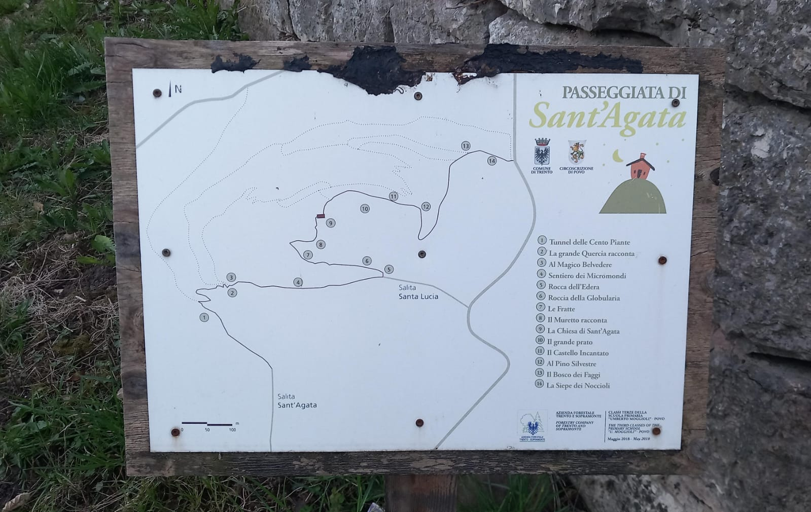
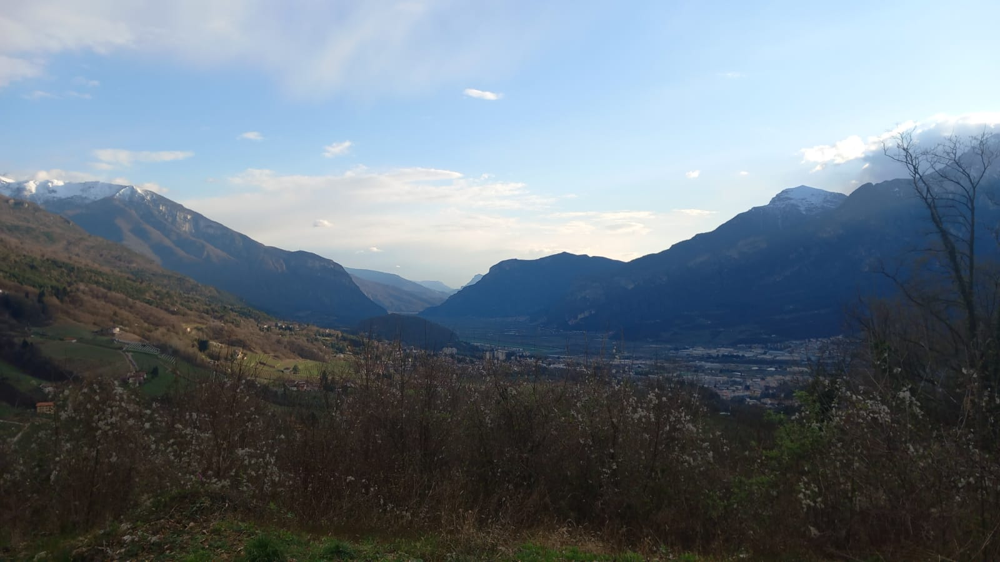
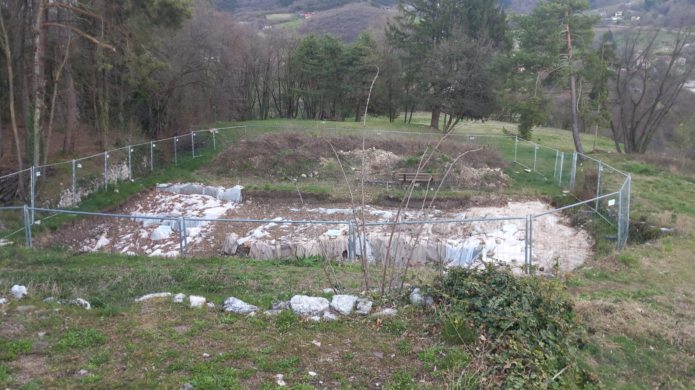
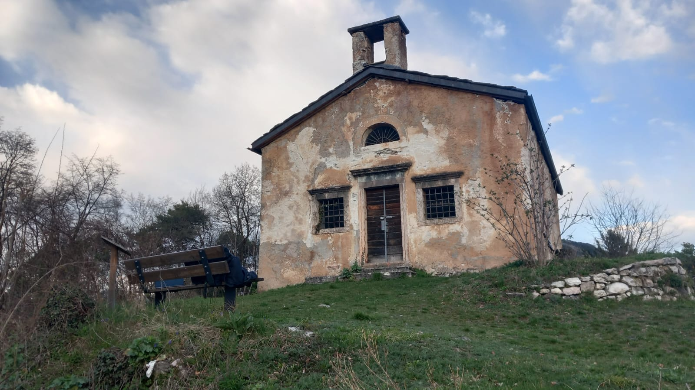
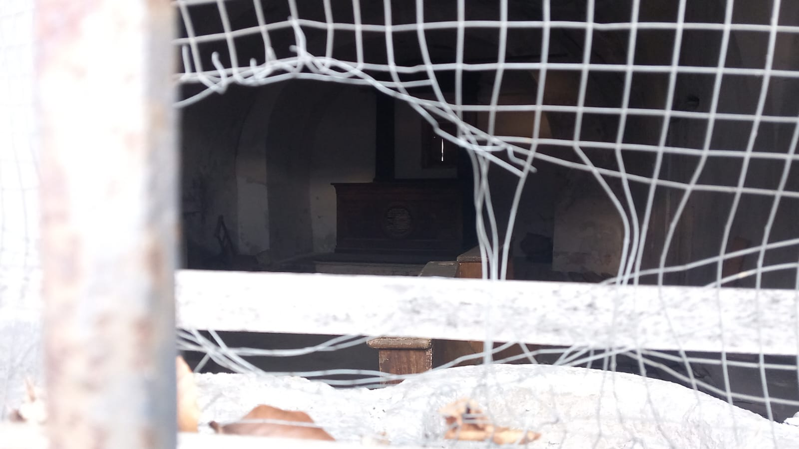
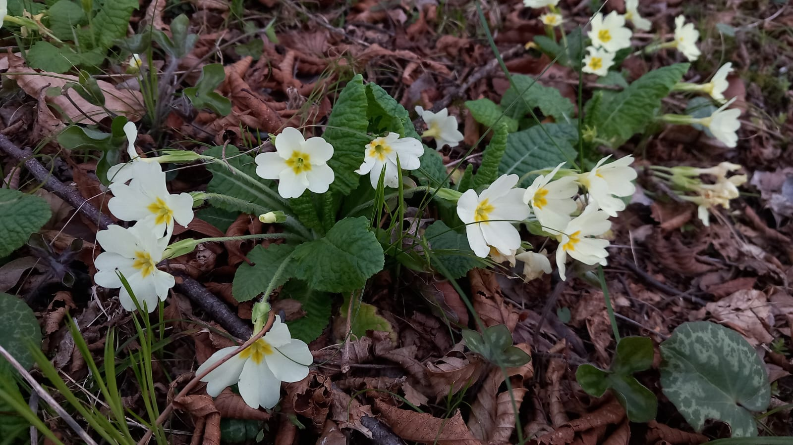
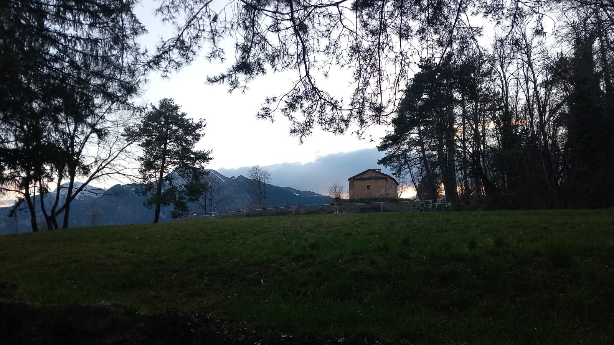

Sant Agata Church
Sitting in front of me is Sant'Agata church, or what remains of it. Despite It's age, being born in the 16th century, the church stands strong from the ground, challenging time itself. We rest together on a "Doss" which is a tall hill or bump from the ground, but too modest to be considered a mountain, laying between Povo and Oltrecastello. Everything is quiet here except the birds and the noise of the cars from the city beneath.
Reaching the top of the Doss is simple. From Povo, more specifically Piazza Manci, one can follow the street going east towards Cimirlo. At the first opportunity, turn left when you see a SAT sign advertising a walk reaching Oltrecastello. The trail quickly goes up for the first 10 minutes, and slows down for the remaining 15. Despite the first half, the path is generous with many benches to let the explorer catch some breath. Overall, the walk is easily accessible even for elderly people, I even met two elderly women while I was going up. An alternative route would be from Oltrecastello, following the street towards Povo and turning right just after the main piazza of the town. The path here is shorter but steeper. Obviously, you could go down from either of the two ways.

Figure 1: Map of the path
From up here one can enjoy a good view of Adige's valley, with Its urban areas and urban noises, expecially the southern parts of Trento. Instead, the small fraction of Borino and Cimirlo are perfectly visible in their entirety, a rare sight since they are often hidden by this same doss. Surrounding the hill stand the mount of Marzola on the South-East, mount Celva from east, mount Calisio on the northen side and the valley on the west. The snow on top of Paganella and Bondone can be appreciated even during the spring, although this year the snow has been very shy.

Figure 2: View of the valley from the top
Up here there is a flat grass area where you can enjoy the view and some fresh air, with planty of benches and space to rest. Most of the area is now inaccessible because of some escavations beteath the ground. A long long time ago there was a fortress here ment to protect the city from attacks coming from Valsugana. When the fortress was not necessary anymore, It got dismantled but the foundations still remains.

Figure 3: Archeological site
Dominating the area stands a modest church made of stone and concrete. The look of the church is very simple, with only some framing around the two windows on the side of the wooden door at the front of the house faicing west. The walls lack any kind of decoration, displaying all ruthless of time like an old person. A hollow structure on the roof hints of a bell lost to time. Despite It's size, the church catches the attention and the imagination of the people coming up here, wondering of the devoted and hard working people who created it in a past era.

Figure 4: The church view from west
Peeking at the windows, the interior looks as abandoned as the exterior. A wooden floor with some benches fills the empty space, hidden by a layer of dust and the lack of sun light. On the back sleeps what used to be an altar, retired from Its important job, now discredited and disrespected.

Figure 5: Peeking at the window
A good variety of flowers and plants surround the church, keeping spring alive. The green grass is painted with colors of violet, yellow and white.

Figure 6: Some bright flowers
It is the 26 of March 2025, 6:11pm.

Figure 7: The church from the back
—
Go back: surroundings